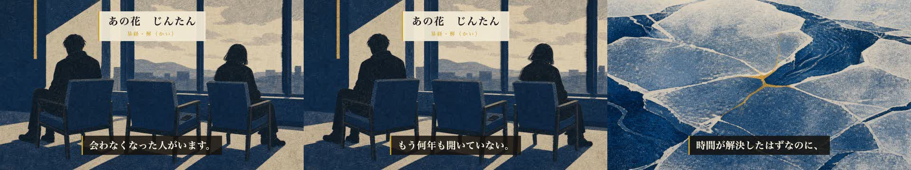

あなたが選んだ「A：差し替える」を実行しました。V_01_01 の1シーンだけを断言型に替え、音声再合成 → 字幕再同期 → 再レンダまで完了しています。他の26シーンは一字も変えていません。
転換の正典（docs/pivot-pain-first.md §3）は「日常語の断言で2〜3文」。タイトルが「たぶん一人はいる。」と断言しているのに冒頭が問いかけで、約束がズレていました。独立採点も「断言でなく問いかけ、情景も抽象的」と同じ指摘（旧96点 → 新100点）。

releases/064/ep44_kai.mp4（724MB・8分29秒）。冒頭15秒だけでも構いません——他は前回観ていただいたものと同一です。| 項目 | 結果 | 中身 |
|---|---|---|
| タイトル（独立採点） | 98 / 100 | bonの選定もあなたと同じ t2（99点）。「気まずいまま会わなくなった人が、たぶん一人はいる。｜あの花×解」 |
| 冒頭9秒（独立採点） | 100 / 100 | 「未達なし。前置き・問いかけ・作品説明・概念語なし。修正不要」 |
| 台本（差し替え後・再採点） | 97 / 100 | 両ゲート通過・意図逸脱なし |
| ミックス（再検査） | PASS | 尺509.0s / ピーク-4.1dB / 幕間BGM -34.9dB / 26境界すべて黒落ちなし |
| シーン画像（batch） | 91 / 100 | 識別ブラインド監査 30/30「不明」・安全弁4項目すべてfalse |
analytics/eval-schemas/title.json にコホート条件分岐を入れました。転換群＝痛み先頭型で採点、それ以外＝従来のH50/H49割付どおり。通常回（ep39-42等）の採点基準は7軸すべて一字も変えていません（機械照合済み）。これで ep43 以降の転換群が公開ゲートを通れるようになりました。
変更は V_01_01 の1シーンのみ。A：承認 ／ B：直す
冒頭15秒を観て判断してください。A：承認 ／ B：直す
背景は暖色に振って型を崩しましたが（濃紺→明るい夏の空）、題字の型そのものは make-thumbnail-tierA.py が固定していて変えられません。5案・3回の独立採点を回して、最高が 83点（可読性24/25・約束の回収5/5・ポリシー9/10は満点圏、distinctivenessだけが落ちる）。
もう一点：卦「解」の象徴＝足元から溶け出す藍の氷が2行目の題字にほぼ隠れています。題字を縦組みか上段へ逃がせば氷が立ちます。
make-thumbnail-tierA.py に追加し、今回は縦組みで作り直して90点を取ってから公開。実装＋再採点で1時間ほど。以後の全話で使える恒久修正。yt-publish で private＋2026-07-28 04:00 JST 予約（公開ボタンは押しません）yt-schedule-verify で予約の裏取り公開枠 2026-07-28 は claim 済み。YouTubeへのアップロードはまだ1バイトも行っていません。